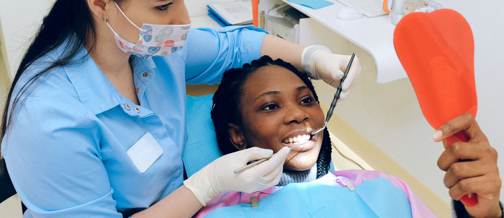

Por qué el protocolo de primera visita tiene que estar escrito

Hay un tipo de conocimiento muy peligroso en una clínica dental: el que solo existe en la cabeza de una persona.
El dentista que sabe exactamente qué decirle al paciente que pregunta el precio antes de sentarse. El que sabe cómo manejar al que viene convencido de que necesita una cosa y resulta que necesita otra. El que sabe en qué momento presentar el presupuesto y cómo hacerlo sin que suene a venta de coches.
Ese conocimiento tiene un nombre: experiencia. Y es muy valioso. El problema es cuando solo existe como experiencia, sin más soporte que la memoria de quien la tiene.
Porque la memoria falla. Y los dentistas también tienen días malos.
La clínica que funciona cuando el dentista está en forma
Piensa en tu última semana de trabajo. ¿Hubo algún día en que llegaste cargado, sin dormir bien, con algo en la cabeza? ¿Y otro día en que todo fluyó, los pacientes conectaron, los presupuestos cerraron solos?
Si tu clínica tiene protocolo oral y no escrito, esos dos días son clínicas diferentes para el paciente que entra por primera vez.
La primera visita es el momento de mayor impacto en la relación con el paciente. Es cuando decide si confía, si vuelve, si acepta el tratamiento, si te recomienda. Y en muchas clínicas, cómo sale esa visita depende del estado de ánimo del dentista ese día. O de si la auxiliar que tocó ese turno es la que lleva más años o la que lleva tres semanas.
Eso no es un sistema. Es ruleta.
Qué pasa cuando lo escribes
Documentar el protocolo de primera visita no es burocracia. Es transferencia de conocimiento. Estás sacando lo que sabes de tu cabeza y poniéndolo en un sitio donde el equipo puede acceder a ello aunque tú no estés.
Las clínicas que trabajan con Método EBA pasan por este proceso como primer paso antes de tocar nada más. Y sistemáticamente, lo que encuentran es lo mismo: el protocolo existe. Solo que nadie lo había escrito nunca.
Cuando lo escribes pasan tres cosas:
- El equipo puede ejecutarlo sin que tú estés. La auxiliar no pregunta «¿llamo yo a los pacientes?». Sabe cuándo llamar, qué decir y cómo registrarlo.
- Puedes mejorarlo. Mientras está en tu cabeza, no puedes revisarlo ni compararlo con nada. Escrito, puedes ver qué falla, qué falta, qué funciona.
- Puedes enseñarlo. Cuando entra alguien nuevo al equipo, el tiempo de onboarding cae en picado. No tienes que explicar lo mismo diez veces porque el protocolo ya existe.
Los cuatro momentos que hay que documentar
No hace falta un manual de cien páginas. La primera visita tiene cuatro momentos críticos que, si están bien definidos, lo demás se sostiene solo.
- La acogida antes del sillón. Quién saluda, cómo, qué se dice, dónde se sienta el paciente. Parece trivial. No lo es. La clínica en la que el paciente espera de pie diez minutos sin que nadie le diga nada pierde la primera batalla antes de empezar.
- La exploración y el diagnóstico. No el protocolo clínico, sino la comunicación durante y después. Qué le dices, cómo se lo dices, en qué orden presentas la información.
- La presentación del presupuesto. Este es el punto donde más clínicas improvisan y donde más tratamientos se pierden. La diferencia entre un paciente que acepta y uno que se va a pensar es casi siempre cómo se le presenta, no el precio.
- El cierre y el siguiente paso. Qué pasa justo cuando el paciente se levanta del sillón. ¿Queda algo concreto pendiente? ¿Hay fecha? ¿Alguien va a llamar en 48 horas?
El 68% de las clínicas dentales no tiene documentado el protocolo de primera visita. Lo hacen, pero de memoria. Cada uno a su manera. Sin guión, sin criterio común.
El error de pensar que esto ya lo sabe el equipo
Cuando llevas muchos años en una clínica, asumes que el equipo entiende cómo funciona. Y a veces es verdad: el equipo veterano sí lo sabe. El problema es que ese conocimiento es tácito, no transferible. No sobrevive una rotación, una baja larga, o a ti cogiendo vacaciones.
Y hay otro problema más silencioso: incluso el equipo veterano ejecuta el protocolo de forma distinta según el día, la carga de trabajo, o cómo fue la mañana. Sin un guión escrito, no hay forma de saber si lo que se ejecuta hoy es lo mismo que se ejecutó la semana pasada.
Lo que diferencia las clínicas que crecen
Las clínicas que más crecen —no las más grandes, las que más crecen— tienen en común una cosa que no es tecnología ni publicidad: el protocolo existe fuera de la cabeza del dentista. Está escrito. El equipo lo conoce. Y cuando entra un paciente nuevo, el resultado no depende de si el dentista tiene el día bueno.
Eso no se construye solo. Se construye en un proceso concreto, con tiempo dedicado, con alguien que facilite y con el equipo en la sala. Pero una vez que está, cambia la forma en que funciona la clínica.
No es gestión avanzada. Es el suelo desde el que empieza todo lo demás.